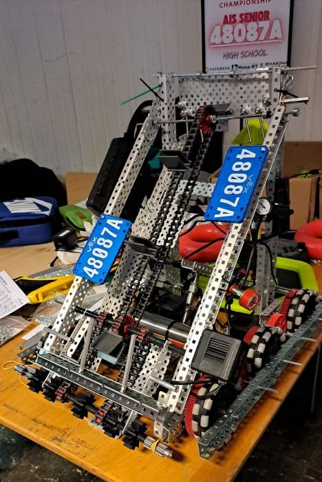
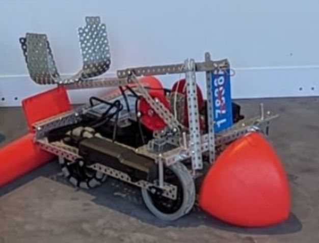
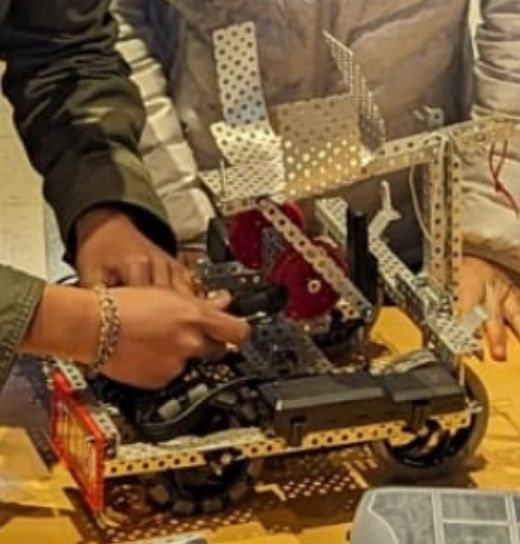
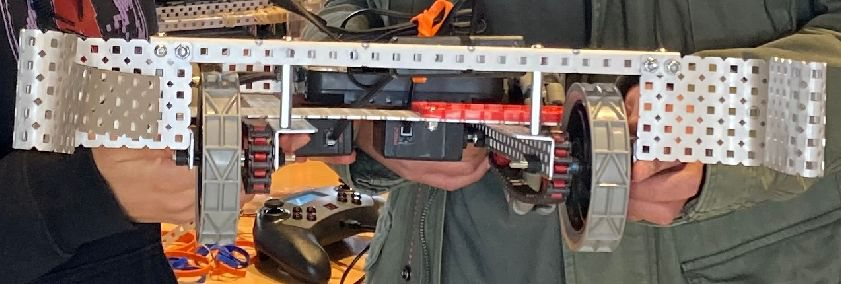

VEX Robotics Team
Founding and leading my high school's VEX Robotics team.
Overview
From September 2023 to June 2025, I founded and led my high school's VEX Robotics team, which designs, builds, and programs robots for the VEX Robotics Competition. [TODO: why you started the team, and how big it grew.]
My role
As Founder & President, I led robot design and assembly, including the chassis and mechanical systems. Off the field, I built the team into something that could last: I led fundraising, budgeting, technical documentation, and the team's infrastructure.
Design & build
We designed and built our intake, pneumatic grabbing, catapult, conveyor belt, and launching mechanisms from scratch, and programmed the autonomous and driver controls in Python. [TODO: one mechanism you're proudest of and how it worked.]



Results
- Placed in the top 10 at the 2024 and 2025 VEX Robotics Benelux Championships
- Founded and grew a sustainable team through fundraising, budgeting, and technical documentation
[TODO: what you learned from leading the team.]